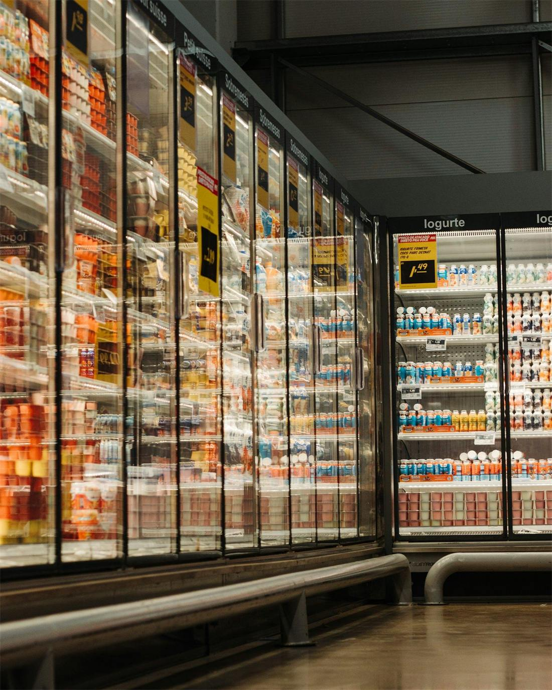
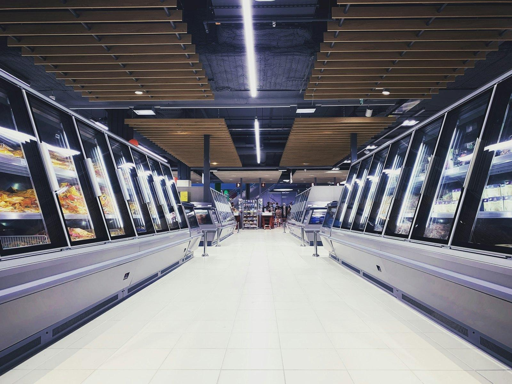
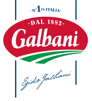
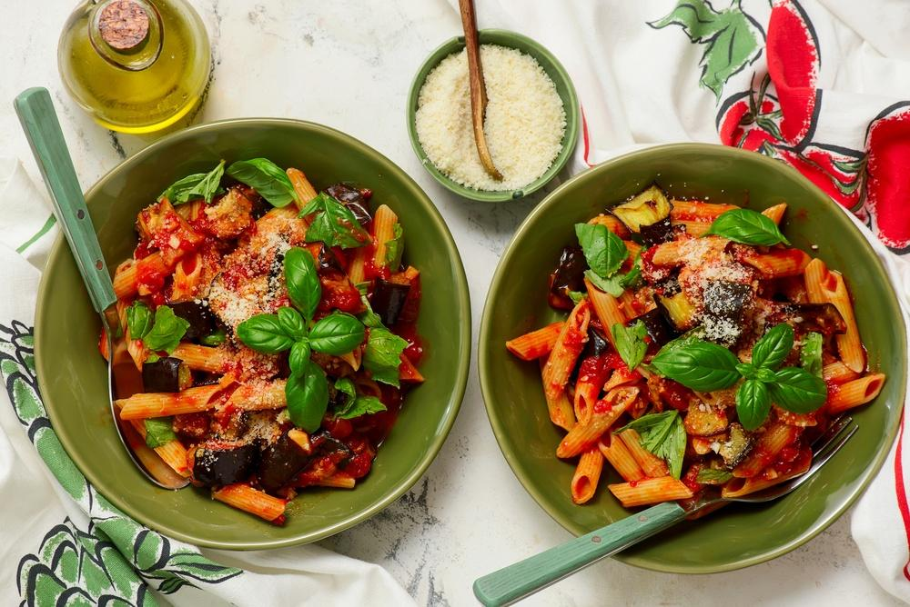

No Brasil, primeiro precisa ser encontrada.
Planejamento estratégico de trade · 2027
Ser encontrada antes de ser escolhida.
Distribuição, mix, espaço, giro e governança de execução para Galbani no varejo alimentar brasileiro.
Abrir com a tensão: na Itália a marca é sinônimo de confiança; aqui, ainda precisa ser encontrada na geladeira. Toda a apresentação responde a isso.
Agenda O que vamos discutir hoje
Seis capítulos, do diagnóstico à regra de escala.
A pergunta que atravessa tudo: como fazer Galbani ser encontrada, entendida, experimentada e recomprada?
Cada capítulo é clicável. A trilha vai da geladeira até a mesa: é o caminho que a marca precisa percorrer na loja.
I · Leitura do desafio Problema aparente × problema real
O briefing pede giro. O desafio real começa antes: presença.
Estar nas lojas de maior potencial, com abastecimento combinado.
Ser localizada em segundos, em bloco, e não em SKUs dispersos.
Abastecida, precificada e no padrão, loja a loja.
Briefing Galbani 2027; leitura 75LAB.
Não existe giro onde a marca não está. Antes de pressionar sellout, precisamos de presença qualificada e mensurável nas lojas de maior potencial.
I · Leitura do desafio Decupagem do briefing
Seis fatos do briefing apontam para um problema de cobertura, arquitetura e execução.
Cerca de dois anos no Brasil; distribuição, volume e giro ainda baixos.
Vencer disponibilidade e descoberta antes de pressionar sellout.
Marca italiana da Lactalis DPA, com novo posicionamento: Do seu jeito, à sua mesa.
A italianidade precisa de tradução prática brasileira, não de decoração.
Mussarela, requeijão, creme de ricota e parmesão ralado.
Quatro portas de entrada que cobrem lanche, café, receitas, massas e finalização.
Expandir PDVs, aumentar SKUs por loja, formar bloco de marca e conquistar pontos extras.
Problema de cobertura, arquitetura de categoria e qualidade de execução.
R$ 1 milhão, dividido em 30% + 25% + 30% + 25%.
A soma é 110%: risco de supercontratar R$ 100 mil.
Varejo alimentar; ativos refrigerados pedem energia, manutenção e autorização; frete à parte.
Clusterizar por potencial, infraestrutura, espaço e capacidade de reposição.
Ler da esquerda para a direita: o fato que recebemos e o que ele significa. Destacar o orçamento: a soma dá 110%.
I · Leitura do desafio Sabemos × precisamos descobrir
Quatro respostas críticas definem onde investir; o kick-off precisa trazê-las.
Há quatro SKUs de entrada e ativos DPA para freezer, geladeira, ponta, ilha e degustação.
Baseline por rede: distribuição numérica e ponderada, SKUs por loja, giro e ruptura.
O catálogo traz formatos com e sem energia, prazos de 10 a 30 dias e valores sem frete.
Quem compra ou cede o equipamento, custo total, energia, SLA de reparo, seguro, armazenagem e logística reversa.
O briefing recomenda concentrar recursos em um grupo prioritário de lojas.
Lista de redes, perfil de loja, contrapartidas, pontos permitidos e planograma.
O briefing pede rastreio e controle da geladeira via Codice.
Escopo real: inventário, checklist, fotos, chamados, temperatura, geolocalização, integrações e LGPD.
A marca quer presença na rotina e versatilidade.
Segmentos prioritários, percepção de preço, barreira à marca nova e ocasiões prioritárias.
O piloto começa em redes com categoria refrigerada estruturada; o portfólio-base tem abastecimento assegurado; o Codice pode centralizar inventário e evidência de execução.
As quatro críticas definem investimento, viabilidade, seleção de lojas e escopo de tecnologia. Sem elas, qualquer proposta comercial vira estimativa.
II · Contexto Marca
A credencial italiana é forte; o desafio é transformá-la em benefício de uso no dia a dia.
- 1882
Egidio e Davide Galbani começam a produzir queijos na Lombardia.
- 1956
Nasce o slogan “Galbani quer dizer confiança”.
- 2006
Entra para o Grupo Lactalis; hoje está em mais de 140 países.
- 2024
Chega ao Brasil pela DPA, com 14 SKUs; estreia na TV com Paola Carosella como embaixadora.
- Agora
Novo posicionamento: Do seu jeito, à sua mesa.
A promessa já aponta para a mesa. No PDV, ela precisa virar ocasião, receita e solução, e não só origem.

galbani.com.br e galbani.com.br/nossa-historia (22/10/2026); lactalisculinary.com; SuperVarejo (05/04/2024); Propmark (15/08/2024); posicionamento informado no briefing.
A marca tem 140 anos de autoridade e uma promessa que já fala de mesa. O trabalho do trade é traduzir isso em ocasião de uso na frente da geladeira.
II · Contexto Portfólio-base
Quatro SKUs de entrada cobrem cinco ocasiões da mesa, se aparecerem como soluções, e não como lista.
Mussarela e requeijão estão entre os queijos mais consumidos no Brasil (ABIQ, via AgFeed, 04/09/2025).
Briefing (portfólio-base); galbani.com.br (produtos e receitas). Mapa de ocasiões: leitura 75LAB a validar com Categoria.
O portfólio-base não é lista de SKUs, é um cardápio de ocasiões. Mussarela e requeijão são os queijos mais consumidos do país: a porta de entrada certa.
II · Contexto Mercado
A categoria cresce e se consolida, mas o carrinho encolhe: cada item precisa justificar seu lugar.
produção de queijos no Brasil em 2024, +6% em volume
ABIQ, via eDairyNews (18/07/2025)
vendas de queijos em valor em 2024, e +10% em volume
Nielsen, via eDairyNews (18/07/2025)
faturamento de mussarela, o queijo que mais cresce
Scanntech, via Giro News (09/12/2024)
por cesta, de 2024 para 2025: menos espaço para experimentar
Worldpanel by Numerator, via Mercado&Consumo (20/01/2026)
dos itens da cesta das classes AB comprados em promoção
Kantar, 2º trimestre de 2025 (04/11/2025)
usados em média por shopper: a marca precisa estar onde ele estiver
Kantar (04/11/2025)
Uma categoria aquecida atrai aquisições (Aurora, Scala, Tirolez, Savencia) e disputa o mesmo espaço frio. Para uma marca nova, disponibilidade e bloco são a primeira vantagem competitiva.
Dois movimentos ao mesmo tempo: queijo cresce em valor e volume, enquanto o shopper leva menos itens e compra mais em promoção. A marca nova precisa ser a escolha fácil.
II · Contexto Concorrência
A gôndola tem donos de hábito, de preço e de prestígio; o espaço livre é a italianidade prática do dia a dia.
italianidade prática
no cotidiano
- TirolezAmplo portfólio, tradição, culinária e inovações funcionais; em consolidação.Ocupar italianidade aplicável e solução de refeição.
- Vigor e Faixa AzulFamiliaridade e presença histórica em lácteos e queijos.Bloco novo que facilite descoberta e combinação.
- Polenghi (Savencia)Autoridade em queijos e especialidades.Democratizar o toque italiano sem reduzir qualidade.
- Regionais e marca própriaPreço, capilaridade e hábito local.Ser a escolha que agrega valor claro à mesa.
- Président é do Grupo Lactalis: o papel de cada marca do grupo na gôndola se define em arquitetura de portfólio, não em disputa.
Briefing; sites oficiais Tirolez e Vigor; Mercado&Consumo (03/11/2025 e 06/03/2026); AgFeed (04/09/2025). Posições no mapa: leitura qualitativa 75LAB.
Ninguém ocupa a italianidade prática do dia a dia: quem é italiano é especial, quem é cotidiano não é italiano. Atenção: Président é do mesmo grupo.
II · Contexto Shopper
O shopper decide no modo rápido: marca nova só entra se reduzir o esforço de escolha.
- Contexto
Resolver uma refeição ou lanche.
BarreiraPouco tempo e lista mental curta.
OportunidadeFalar de ocasiões, não de discurso institucional.
- Estímulo
Encontrar a categoria fria.
BarreiraMarca nova se mistura ao bloco competitivo.
OportunidadeBloco visual Galbani e códigos de uso.
- Interesse
Comparar marca, preço, formato e benefício.
BarreiraItalianidade pode parecer distante ou premium demais.
OportunidadeTraduzir em receitas e finalizações simples.
- Decisão
Escolher item conhecido ou em promoção.
BarreiraRisco percebido em trocar.
OportunidadePortfólio-base como entrada de baixa fricção; degustação seletiva.
- Experiência
Preparar e servir.
BarreiraUso único limita a recompra.
OportunidadeReceitas e comunicação por ocasião ampliam o repertório.
Briefing Galbani 2027 (jornada e tensões); curva de atrito: leitura qualitativa 75LAB.
Os dois picos de atrito estão na geladeira (achar a marca) e na decisão (risco de trocar). É exatamente onde o bloco e o portfólio-base atuam.
II · Contexto Tensões estratégicas
Três tensões definem o jogo; a central é ser ajuda prática, e não mais uma explicação.
bloco e ocasião reduzem o risco de trocar.
italianidade como solução, não como decoração.
intensidade proporcional, por cluster.
Quando o shopper entra em modo de compra rápida, uma marca nova só ganha espaço se sua origem for percebida como ajuda prática, e não como uma explicação a mais para ler.
“Cada tensão tem um ponto de equilíbrio que vira decisão de projeto: bloco, tradução prática e intensidade por cluster.
II · Contexto Tendências
As tendências que importam aqui deixam o PDV legível e mensurável, não mais tecnológico.
R$ 4,8 biinvestidos no Brasil em 2025, +37% no ano.
Para GalbaniLigar o bloco físico à vitrine digital da rede nas janelas de ponto extra.
IAB Brasil e Ibope, via Mercado&Consumo (29/04/2026)
+18,2%no faturamento de queijos no atacarejo, o canal que mais cresceu.
Para GalbaniCluster por formato: comunicação legível a distância e mix por canal.
Scanntech, via Giro News (09/12/2024)
1 em 3que degustam compram na mesma visita (NielsenIQ, citado pelo Assaí).
Para GalbaniDegustar o item de maior barreira, com meta de conversão e registro.
SuperVarejo (09/12/2025) · dado citado, validar o estudo original
Foto + checklistcomo prova de que o instalado foi executado no padrão.
Para GalbaniOne Shot na implantação e rotina recorrente no On Timing.
Prática de mercado em trade marketing
30 mil+geladeiras da Coca-Cola no Brasil já tinham monitoramento IoT.
Para GalbaniSensores só depois de provar operação e retorno (could have).
Syos, via Baguete (14/04/2022)
QR → receitagalbani.com.br já organiza receitas italianas e à moda brasileira.
Para GalbaniQR por ocasião no stopper: do produto à receita em um toque.
galbani.com.br/receitas (22/10/2026)
Nenhuma tendência entra por modismo. Cada uma tem uma aplicação concreta e um lugar na priorização (must, should ou could have).
III · Estratégia Insights
Disponibilidade é comunicação: sem presença na loja, nenhuma campanha gera escolha.
Se a marca não está na loja, não existe campanha que gere escolha naquele momento.
- 02Quatro SKUs contam uma história
Mussarela, requeijão, creme de ricota e parmesão como soluções para ocasiões.
- 03O bloco resolve a descoberta
Agrupar reduz a procura visual e faz o portfólio parecer mais relevante.
- 04Ponto extra sem reposição vira mídia vazia
Todo ativo precisa de dono, estoque, rotina de foto e checklist.
- 05Dado só vale se virar decisão
Rastrear importa quando muda rota, manutenção, negociação, abastecimento ou investimento.
- 06Experimentação é seletiva
Degustação prova o produto de maior barreira; não compensa falta de distribuição.
O insight 01 organiza os outros cinco: presença primeiro, depois agrupamento, ativação com dono, dados com decisão e prova seletiva.
III · Estratégia Pergunta estratégica
Como podemos construir um modelo de entrada no varejo que faça Galbani ser encontrada, entendida, experimentada e recomprada, enquanto cada ativo físico vira fonte de aprendizado para a expansão?
Oportunidade: transformar Galbani em escolha habitual de queijos e cremosos, porque sua autoridade italiana pode resolver, de forma simples e visual, mais ocasiões da mesa brasileira, desde que a marca esteja presente, agrupada e disponível.
Aprendizadocada ativo gera dado para a próxima onda
Pausa. Esta é a pergunta que a estratégia responde. Repare que o ciclo não termina na recompra: termina no aprendizado que alimenta a próxima onda.
III · Estratégia Estratégia central
De SKUs dispersos a um bloco Galbani reconhecível, abastecido e relevante.
Presença pontual, portfólio disperso e execução difícil de comparar entre lojas.
Um bloco Galbani reconhecível, abastecido e relevante para diferentes usos da mesa.
- Base de mix por cluster
- Visibilidade proporcional
- Conteúdo por ocasião
- Gestão de ativos e evidências
Use o botão De/Para para repetir a animação. A mudança é de dispersão para bloco, e de execução incomparável para execução padronizada.
III · Estratégia Pilares
Cinco movimentos, nesta ordem: entrar, agrupar, ativar, provar e aprender.
- 01Entrar
Portfólio-base nas lojas de maior potencial, com condição comercial e abastecimento combinados antes da ativação.
- 02Agrupar
Bloco de marca e navegação por ocasião: o shopper localiza Galbani em segundos.
- 03Ativar
Do seu jeito, à sua mesa como convite a usos reais: lanche, café, receita e finalização.
- 04Provar
Degustação e ponto extra com missão clara: introduzir, demonstrar, vender e registrar.
- 05Aprender
Acompanhar ativos, execução, ruptura e resultado para decidir escala com evidência.
A ordem importa: não se ativa antes de entrar, não se prova sem agrupar. O último pilar volta para o primeiro.
IV · Solução Territórios conceituais
Três territórios avaliados; só um transforma o posicionamento em operação de loja.
Seu jeito de italiano
Italianidade sem rigidez: o melhor da origem entra nas combinações reais de cada casa. Ganha vida em pratos cotidianos, creators e degustação.
Forte para comunicação; exige cuidado para não perder a credencial.
Mesa que se encontra
Galbani como ingrediente que reúne rotinas e preferências diferentes. Desdobra em ações de fim de semana e mesa de degustação.
Mais emocional; menos direto para distribuição e listagem.
Da geladeira à mesa
A presença Galbani começa no frio e termina na solução de uma refeição: geladeira ou ponta com escolha de uso, receita curta e QR por momento.
Operacional, ligado ao PDV e escalável.
Barras: leitura qualitativa 75LAB sobre os critérios do briefing, não uma pesquisa.
Os dois primeiros são bons para comunicação. O terceiro é o único que funciona como sistema de loja. Avançar para o reveal.
IV · Solução A plataforma
Da geladeira à mesa
Do seu jeito, à sua mesa vira princípio operacional: a marca aparece onde se escolhe, orienta como usar e continua presente quando se serve.
Momento central. A plataforma pega o posicionamento da marca e o transforma em regra de loja: aparecer, orientar, continuar presente.
IV · Solução Como funciona
Um bloco que se lê em segundos: marca, ocasião, produto e preço.
- HeroBloco Da geladeira à mesa
Módulo de presença fria ou bloco de gôndola que reúne o portfólio e organiza a leitura por ocasião.
- SupportRégua, stopper e receita
Preço legível, bandeja de uso, receitas curtas com QR e ponto extra em janela comercial.
- ScaleKit modular por loja
Peças substituíveis e troca de comunicação, sem forçar ilha onde a operação não suporta.
- ProvaDegustação com missão
Só com estoque, item-alvo, argumentário e registro de resultado.
Arraste para girar e abra as camadas. A leitura em segundos segue a hierarquia: marca, ocasião, produto, preço.
IV · Solução Ecossistema de ativos
A moldura de freezer cobre com o menor custo por posição; ponta e ilha ficam com as lojas âncora.
DPA, Catálogo de Ativos 2027 (14/10/2026). Valores estimados, sem frete. Custo por posição: cálculo 75LAB sobre o ponto médio da faixa.
Moldura de freezer onde já há freezer e bom tráfego, mais materiais leves. Abre presença sem imobilizar capital.
Geladeira com móvel, depois de validar o custo total de equipamento e energia.
Ponta de gôndola em janela negociada; ilha em poucas lojas. Ilha não é ferramenta de cobertura.
Leitura nova do catálogo: dividindo o preço pela capacidade, a moldura de freezer custa cerca de um quinto da ponta por posição de produto, e não pede energia.
IV · Solução Clusters
Três clusters, três intensidades: investir na proporção do potencial e da capacidade de operar.
O ativo segue a loja, e não o contrário: cada cluster recebe a intensidade que consegue manter.
- Potencial de venda da loja
- Infraestrutura fria e energia
- Espaço disponível e contrapartida
- Capacidade de reposição
Intensidade: leitura 75LAB a partir do briefing. Quantidade de lojas por cluster a definir com a base de redes no kick-off.
Cluster A prova o modelo, B aumenta SKUs por loja com baixo custo, C abre disponibilidade sem imobilizar capital.
IV · Solução Governança de investimento
A divisão recebida soma 110%: corrigir antes de contratar evita R$ 100 mil sem cobertura.
- Ativos
- Frete
- Instalação
- Operação
- Degustação
- Tecnologia
- Mensuração
Ponto de governança: aprovação condicionada a escopo e custo total. Os 15% da última frente protegem dados, treinamento e contingência.
V · Execução e dados Design, produção e operação
Nenhum ativo entra na loja sem passar por quatro portões.
- Design
Hierarquia rápida (marca, ocasião, produto e preço) e família modular que agrupa sem poluir.
- Produção
Materiais laváveis, peças substituíveis, troca de comunicação, acesso frontal e desmontagem.
- Operação
Dono por loja, abastecimento, instalação, foto de aceite, visita, manutenção e retirada.
- Aprovação da rede
- Ponto de energia
- Dimensão e fluxo
- Instalação e frete
- Responsável operacional
- Estoque suficiente
- Preço visível e mix acordado
- Equipe treinada
- Roteiro de reposição
- Registro inicial no Codice
- Checklist e foto
- Disponibilidade e ruptura
- Avaria
- Desconto ou promoção
- Leitura de giro, quando houver
- Custo por loja
- Execução no padrão
- Incremento, quando mensurável
- Tempo de ativo disponível
- Manter, corrigir ou replicar
Os portões evitam os dois erros mais caros: produzir para loja que não comporta e ativar sem estoque.
V · Execução e dados Codice
Codice entra como governança do ativo e da execução, e não como tecnologia pela tecnologia.
- CamadaO que controlaValor para Galbani
- Aprendizado comercialExecução × ruptura, mix e sellout, quando houver dado.Indica qual formato, loja e combinação merecem escala.
- Visão gerencialPainel por rede e cluster, mapa de ativos, prioridade de visitas.Direciona equipe e verba para risco ou oportunidade.
- Chamados e manutençãoAvaria, pendência, reposição e SLA.Reduz ativo parado e protege o investimento.
- Evidência de execuçãoChecklist, foto, mix, comunicação, preço e condição visual.Transforma instalado em executado no padrão.
- Cadastro únicoAtivo, loja, rede, localização, responsável, instalação e status.Evita ativo invisível e habilita inventário auditável.
Codice não substitui manutenção, promotor ou abastecimento.
- Monitoramento de temperatura
- Geolocalização em tempo real
- Integração com dados de venda
- Coleta de dados pessoais
Nada disso entra na proposta sem escopo técnico, autorização e base legal definidos. A funcionalidade contratada precisa ser confirmada antes de qualquer proposta comercial.
A pilha cresce de baixo para cima: sem cadastro não há evidência, sem evidência não há gestão, sem gestão não há aprendizado.
V · Execução e dados Plano de Rastreamento 75LAB
Dois ritmos de rastreio: uma fotografia da implantação e um filme da permanência.
One Shot
Leitura pontual da implantação: o ativo foi instalado, abastecido e está no padrão?
- Implantação
- Foto de aceite
- Presença do mix
- Preço visível
- Conformidade ao padrão
- Loja e data do registro
Entrega: relatório de implantação por loja e cluster, com evidências.
On Timing
Acompanhamento recorrente do ativo durante toda a permanência no PDV.
- Visitas e checklists
- Disponibilidade e ruptura
- Avarias e chamados
- SLA de manutenção
- Troca de comunicação
- Histórico e alertas
Entrega: painel por rede e cluster e ritual mensal de decisão.
Sensores (temperatura, porta, localização) só como could have, depois de escopo técnico e LGPD.
One Shot responde “foi feito?”. On Timing responde “continua funcionando?”. As duas alimentam o Codice.
V · Execução e dados Fluxo de rastreamento
Do ativo à decisão: todo registro precisa terminar em manter, corrigir ou replicar.
Bloco, ponto extra ou degustação cadastrados.
Checklist, foto, ruptura e chamado em campo.
Registro enviado pelo time de campo.
Codice centraliza ativo, loja e evidência.
Base única por ativo, loja, rede e cluster.
Painel aponta risco, ruptura e oportunidade.
Ritual mensal com dono e gatilhos definidos.
O fluxo só fecha se houver dono e ritual. Codice registra; quem decide é o comitê mensal.
V · Execução e dados KPIs
Medimos em quatro camadas, e só chamamos de resultado o que tiver baseline.
Negócio
- Sellout
- Vendas incrementais
- Ticket ou itens por compra
- Margem, quando disponível
Como medirAntes × depois e, se possível, lojas com e sem intervenção.
Trade
- PDVs ativos
- Distribuição ponderada
- SKUs ativos por loja
- Share de exposição e ponto extra
- Ruptura
Como medirBase comercial e auditoria de campo.
Shopper
- Interações e degustações
- Conversão da ação
- Leituras de QR
- Percepção rápida
Como medirContagem e abordagem padronizada por ativação.
Operação
- Ativos instalados e disponíveis
- SLA de manutenção
- Execução conforme padrão
- Fotos aceitas
Como medirCodice e aceite de campo.
Não prometemos ROI. Prometemos um método: baseline no kick-off, leitura comparável e decisão de escala com evidência.
V · Execução e dados Pré-mortem
Seis maneiras de o piloto falhar, e a trava de cada uma.
O ativo é instalado, mas não tem estoque.
Ativar só com estoque mínimo e dono de reposição definidos; alerta de ruptura no checklist.
A verba é consumida por equipamento e frete.
Fechar o custo total de propriedade, e não só o da peça; priorizar a infraestrutura existente.
A loja não mantém o padrão.
Aceite com foto, treinamento simples e rotina de auditoria e visita.
O Codice registra, mas ninguém decide.
Ritual mensal com dono, gatilhos e decisão documentada.
Mensagem bonita não gera navegação.
Testar a comunicação em segundos: marca, ocasião, produto e preço legíveis a distância.
Degustação sem objetivo.
Definir item, volume, abordagem, conversão e disponibilidade antes de aprovar a ação.
Imaginamos o piloto fracassado e voltamos para trás: cada causa provável já tem uma trava no plano.
V · Execução e dados Benefícios
Um mesmo sistema gera valor para seis públicos ao mesmo tempo.
à mesabloco + Codice
Encontra a marca em segundos e entende como usar.
Italianidade vira uso cotidiano e repertório de receitas.
Categoria fria organizada e ponto extra com missão.
Negociação por cluster com evidência de execução.
Dono, checklist e SLA: menos ativo parado.
Escala decidida com evidência, loja a loja.
Benefícios encadeados: o shopper acha, o varejo vende, a operação mantém, os dados mostram, o comercial negocia e a marca cresce.
VI · Próximos passos Entregáveis e priorização
Primeiro o essencial: tecnologia avançada só entra depois de provar retorno e operação.
- Estratégia
Mapa de redes e lojas, matriz de clusters, árvore de mix e playbook de execução.
- Criação
Território, KV de varejo, kit por ocasião, arquitetura de comunicação e manual visual.
- 3D e engenharia
Adaptação dos ativos, vistas de loja, técnico, especificações e protótipo, se necessário.
- Implementação
Instalação, logística, checklist de aceite, treinamento e rotina de manutenção.
- Codice e dados
Modelo de cadastro, campos, painel, checklist, evidências e chamados.
- Mensuração
Baseline, quadro de KPIs, plano de coleta, relatório do piloto e regra de escala.
Lojas e mix definidos, baseline, bloco de marca, regras operacionais, checklist e cadastro de ativos, plano de abastecimento.
Ponto extra por janela, degustação seletiva, QR de receitas, painel consolidado e teste A/B por formato.
Integrações de dados mais profundas, sensores e experiências digitais avançadas.
O must have já resolve presença, bloco e governança. Sensores e integrações só depois que o piloto provar operação e retorno.
VI · Próximos passos Cronograma
Doze semanas da descoberta à regra de escala.
- Kick-offworkshop de 90 minutos
- Fim da S4clusters, mix e território aprovados
- Fim da S7técnico aprovado e Codice configurado
- Fim da S12relatório do piloto e regra de escala
- A definirdatas e responsáveis de cada fase, no workshop
Cronograma em semanas, sem datas: elas dependem do kick-off. Os marcos são pontos de aprovação, não só de entrega.
VI · Próximos passos Próximo passo objetivo
Próximo passo: um workshop de 90 minutos para fechar seis decisões.
- 1Redes e lojas prioritárias
- 2Baseline de distribuição e giro
- 3Orçamento corrigido
- 4Definição funcional do Codice
- 5Custo total dos ativos
- 6Critério de seleção do piloto
Pedido objetivo: agendar o workshop. Com essas seis decisões fechadas, a proposta comercial sai sem estimativas abertas.

Encerramento
Na Itália, Galbani quer dizer confiança.
No Brasil, a confiança começa onde a escolha acontece: da geladeira à mesa.
Fechar voltando à abertura. A promessa da marca é confiança; no Brasil ela começa por estar presente, agrupada e disponível.
Contatos 75LAB · Aceleradora de Trade Marketing
Vamos colocar Galbani na mesa do brasileiro.
75LAB
- Razão social
- 75LAB Estratégia, Design e Produção Ltda.
- CNPJ
- 55.470.982/0001-77
- Endereço
- Av. das Nações Unidas, 12901 · São Paulo · SP
- Telefone
- [a preencher]
- Site
- 75lab.com.br
- contato@75lab.com.br
- Redes
- @setecincolab · LinkedIn
Apresentação
- Nome
- Vanessa Morelli
- Cargo
- Diretora Comercial
- vanessa.morelli@75lab.com.br
- Telefone
- (11) 98398-2803
 Planejamento estratégico de trade
Planejamento estratégico de tradeGalbani 2027 · 22 de outubro de 2026
Deixar esta tela aberta no fim da reunião. Os e-mails podem ser copiados com um clique.
Apoio Fontes e nota metodológica
Todo número tem fonte; toda leitura qualitativa está marcada como da 75LAB.
- Briefing e Catálogo de Ativos DPA 2027Briefing Galbani 2027; catálogo recebido em 14/10/2026 (ativos, custos estimados sem frete, capacidades, energia e prazos).
- Galbani Brasilgalbani.com.br, produtos, receitas e nossa-historia (22/10/2026); lactalisculinary.com (história global).
- Chegada e campanhaSuperVarejo (05/04/2024); Giro News (09/04/2024); Propmark (15/08/2024).
- Mercado de queijosABIQ e Nielsen via eDairyNews/Globo Rural (18/07/2025); Scanntech via Giro News (09/12/2024); ABIQ via AgFeed (04/09/2025).
- ShopperKantar, consumo massivo 2º tri 2025 (04/11/2025); Worldpanel by Numerator via Mercado&Consumo (20/01/2026).
- ConcorrênciaSites oficiais Tirolez e Vigor; Mercado&Consumo (03/11/2025, Tirolez; 06/03/2026, Savencia e Quatá); NIQ via Mercado&Consumo (21/08/2026, marcas próprias).
- TendênciasIAB Brasil e Ibope via Mercado&Consumo (29/04/2026); SuperVarejo (09/12/2025); Baguete (14/04/2022).
- FotosProdutos e receitas: galbani.com.br. Gôndola e freezer: Eduardo Soares (Unsplash). Corredor: ilja Freiberg (Unsplash).
Nota metodológica. Dados de mercado são contexto, não meta de performance. Posições do mapa de concorrência, barras dos territórios, intensidade por cluster e custo por posição são leituras ou cálculos da 75LAB. Números, funcionalidades do Codice e claims de produto devem ser validados com as áreas responsáveis antes de constar em materiais comerciais.
Material de apoio para perguntas sobre fontes.